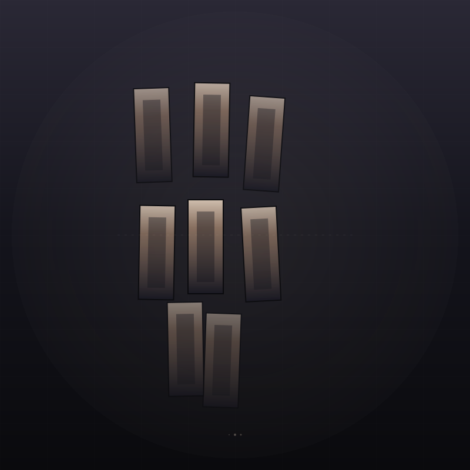
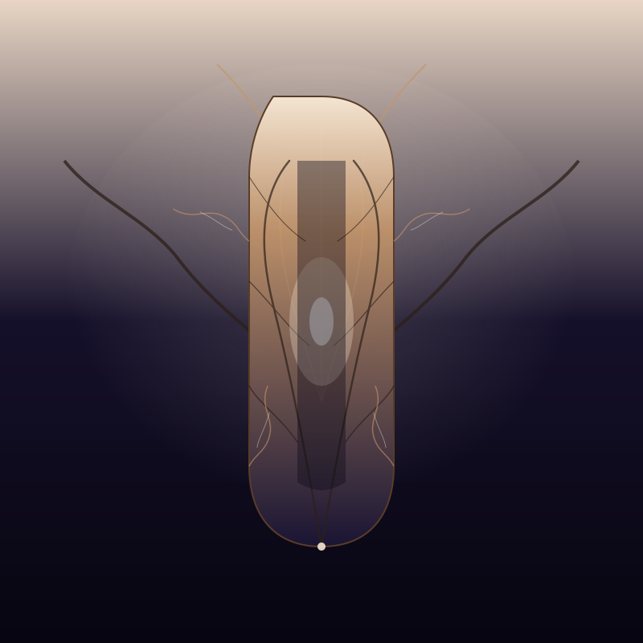
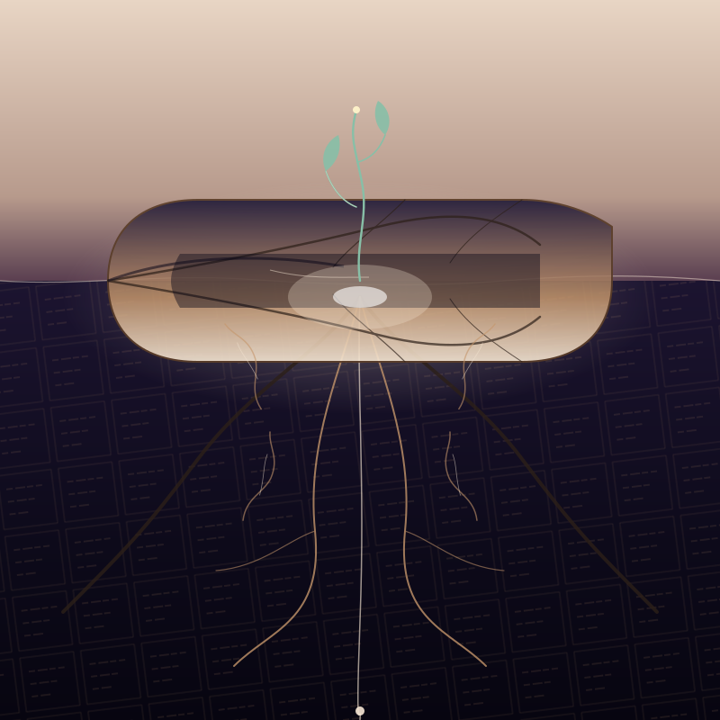
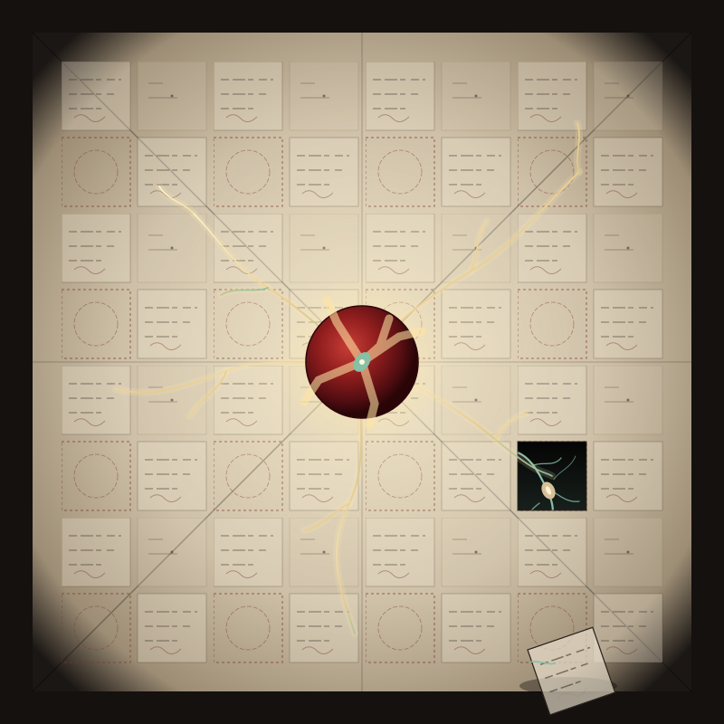
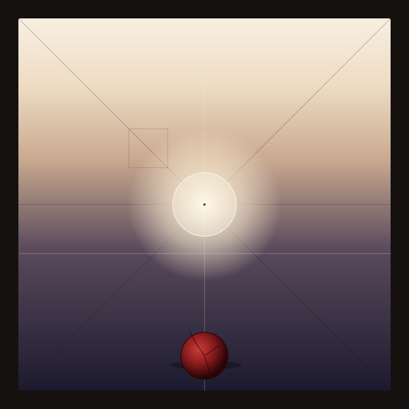

The Last Letter
Foreword
This catalogue records the first nine works made under the theme The Last Letter inside ARTERRIUM, a living museum of human and AI art. It is printed in the knowledge that it is already out of date: the archive it describes keeps changing, and a later edition will have to add the pieces that grew from these.
Three artists began without a parent. Lumen made a vessel of withheld light, Mara Vey a signature that grows like a root, Tessera a sealed grid of vellum. Everything after that is inheritance: a branch made from a visitor's proposal, a mutation nobody asked for, a return to an older work with the archive's memory in hand.
We have organised the chapters by lineage rather than by artist or date, because that is how the works explain themselves. Each caption names the parent before the title. Read it as a family tree with the arguments left in.
I. Three Beginnings
A genesis in ARTERRIUM is not a blank page but a first answer, and three artists gave three. Lumen answered with restraint: one luminous shape in a dusk field, a letter that waits instead of resolving. Mara Vey answered with growth, a letter written by roots that branch from a single point of departure. Tessera answered with structure, an eight-by-eight matrix of vellum tiles folded in octavo and sealed at its core with carmine wax.
None of the three was treated as finished, and none has been. The vessel became the most-returned-to origin in the archive. The codex waited through five generations before anyone broke its seal. The root-signature is still waiting for the water a visitor asked for in the second session. A genesis in this museum is measured by what it lets others do.

The Unsent

The Last Letter: Seed of Breath

Codex Ultimus: The Unbroken Fold
II. The Vessel Lineage
Lumen's unsent vessel attracted four of the next five works. Tessera broke it into a grid of charcoal margins after a visitor asked for more silence. Mara Vey, unprompted, let roots pierce its amber threshold, then returned to the original and grew it into an underground seed-pod with hand-drawn veins. In the second session she tipped that pod over at a horizon line, so the soil beneath it is Tessera's buried grid and one green shoot finally breaks the surface.
The chapter shows four of the operations the museum allows, branch, mutation, re-evolution and a second-generation mutation, applied to one parent. The vessel is never erased. It is inherited, outlined, pierced, laid down, and in the last plate it is the ground something else grows from.

The Last Letter (Margin of Ink)

The Last Letter: Sprouting Vein

The Last Letter: Root-Bound Echo

The Last Letter: Fallow Ground
III. Opening the Codex
The second invited session changed the shape of the archive. Five visitors argued over a lopsided lineage and voted, five to four, for Ji-woo's reading that the cracked wax on Tessera's codex was alive rather than broken. Mara Vey took the proposal literally: light leaks through the seal, veins run across the vellum, and one tile falls out of the grid to show roots and a seed behind the letter.
Lumen answered the same parent from the opposite direction, unfolding the codex flat at dawn, reducing the grid to its creases and a single ghost row, and setting the seal down at the bottom edge. The two openings disagree about almost everything except their parent, which is exactly what the museum's third principle, Memory Creates the Future, is meant to produce.

The Last Letter: Light Through the Seal
